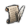
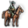
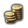
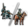

国家界面是用于处理本国或他国事务的界面。玩家可通过点击左上角的盾牌形状国旗（旁边有该国名字）来进入本国的国家界面。盾牌国旗下方会弹出国家界面，显示拥有各种国家信息的几个表栏，鼠标悬停在界面信息上会显示拥有更多信息的提示栏，特别对于数值来说，提示栏一般会描述数值代表什么，它的组成以及它现在的影响。
标签从左到右依次是：
宫廷这一表栏显示了本国状态的概述。
此内容可能已落后版本，最后更新于1.28
|
政府这一表栏显示了本国政府和文化的概述信息。
此内容可能已落后版本，最后更新于1.28
| ||||||||||||||||||||
|
|||||||||||||||||||||
{kind=link}
{kind=link}
{kind=link}
{kind=link}
| 文化 | 稳定 | 行政科技 |
| 激活的政策 | 威望 | 外交科技 |
| 间谍效率 | 理念和传统 | 军事科技 |
| 复仇主义 | 分数 | 腐败 |
{kind=link}
{kind=link}
{kind=link}
- 3: 外交状态：
- 敌国（已将本国设为宿敌的国家）以及宿敌的列表。
- 其他状态：战争，停战协定，其他的外交关系例如同盟和附庸，现在正在进行的外交任务，等等。
- 4: 三种外交栏：
{kind=link}
此内容可能已落后版本，最后更新于1.28
{kind=link}
经济
{kind=link}
这一表栏显示本国经济的概述信息。
- 本国的收支平衡表，分别显示收入和支出。其又被分为各个细项，单独的收入和支出项可在提示栏看到。
- 通货膨胀：表示最近的通胀变化的图表，现在的通胀水平，通胀的变化趋势，以及花费

行政点数来消除通胀的按钮。 - 厌战度和 总发展度
- 贷款：贷一笔款的按钮（显示会得到多少钱），一次偿还一笔贷款的按钮，以及偿还所有贷款的按钮。
此内容可能已落后版本，最后更新于1.28
{kind=link}
贸易
{kind=link}
这一表栏显示本国的所有贸易信息。
- 影响贸易的国家数值
- 当前贸易收入及显示其占总收入比例的饼状图。
- 该国对他国的贸易禁运（显示对贸易效率的影响）和他国对该国的贸易禁运，以及向该国转移贸易竞争力的国家。
- 有关所有已知贸易节点的信息和向这些节点派出商人的按钮。
此内容可能已落后版本，最后更新于1.28
{kind=link}
科技
这一表栏显示本国的所有与科技相关的信息。
对于行政科技:
| 行政效率 | 可用理念组数量 |
| 发展效率 | 生产效率 |
| 建筑 强行军 直属州数量 | |
{kind=link}
{kind=link}
对于外交科技:
| 贸易效率 | 贸易范围 |
| 海军维护费 | 殖民范围 |
| 海军士气 | 全国移民增加 |
| 建筑 间谍行动 可接受文化上限 | |
{kind=link}
对于军事科技:
| 侧翼攻击范围 | 军事战术 |
| 陆军士气 | 战线宽度 |
| 补给上限 | 建筑 |
此内容可能已落后版本，最后更新于1.28
{kind=link}
理念
{kind=link}
- 国家传统和(如果已被解锁)野心。细节在提示栏中。
- 国家理念，从左至右解锁，附有一根进度条显示解锁下一个国家理念的进度（每个需要三个来自理念组中的理念）。
- 理念组: 允许你选取新一个理念组的空位槽按钮（当然也可能锁着），或者已激活的理念组：
- 标识理念组门类的图标：行政，
 外交或军事
外交或军事 - 理念组的名称，提示栏中显示当此理念组完全解锁时可用的政策
- (孙子兵法DLC)一个用于取消理念组的按钮
- 一个灯泡按钮，或明或暗，用以表明理念组的额外奖励是否解锁，提示栏中显示奖励的详细内容
- 自左至右排布的一系列理念。可解锁时其将转化为按钮。
- 显示为下一理念积累某一类君主点数进度的进度条
- 标识理念组门类的图标：行政，
此内容可能已落后版本，最后更新于1.28
{kind=link}
任务
这一表栏显示国家的任务树。这里显示的是 俄罗斯的；其他的国家有不同的任务树。
- 每个任务拥有:
- 任务由箭头互相连接。如果箭头从任务A指向任务B，那么任务A完成后，任务B才能够完成。如果它的前置任务还没有完成，任务将是灰色的。
{kind=link}
此内容可能已落后版本，最后更新于1.28
{kind=link}
政策和决议
- 政策:
- 已经启用的政策。提示栏中显示政策的详细内容。点击一个政策可以撤销它。
- 一个按钮，用以开启通过新政策的界面。
- 决议列表:
- 可以立即执行的决议在顶部，以字母表顺序排列。
- "重要的" 决议更加靠前，用绿色标注而不是蓝色。
- 将鼠标放在决议名称上会显示决议描述。
- 决议可以通过时，会显示一个提示。此处有一个切换按钮可关闭这个提示。
- 一个问号符号，提示栏中显示执行决议的条件。
- 点击信封符号来执行决议（如果它不是灰色）。
此内容可能已落后版本，最后更新于1.28
{kind=link}
稳定和扩张
{kind=link}
该栏显示有关该国内部情况的信息。
- 厌战度：
- 一根显示当前厌战度的进度条，满值为20，鼠标悬停查看当前效果
- 一根表示其上升、下降或保持不变的箭头
- 一个按钮，用以消耗外交点数来降低厌战度
- 可能的灾难的名单
- 稳定：
- 过度扩张：
- 殖民扩张相关：
- 当前的殖民范围
- 当前的全局移民增长
- 三个按钮，用来选择该国的土著政策（若国家没有殖民者则不可用）。(需要哥萨克)
- 叛乱与可能的叛乱：
- 一根进度条，显示叛乱毁国的进度
- 国家叛乱度
- 在叛乱度为正及已存在叛军的省份的叛军派系列表：
- 该叛军派系的名称及标志（分离主义叛军的标志是与之相关联的国家的盾徽）
- 这个派系的要求
- 到下次起义的进度
- “解决他们！”按钮，可更详细地显示叛军要求并给出应对叛军的几个选择：接受要求、提升稳定度、严酷镇压或核心化相关省份。
此内容可能已落后版本，最后更新于1.28
{kind=link}
宗教
{kind=link}
该栏给出与国内宗教相关的所有信息。
- 左上角：一个用来在能改变国教时改变国教的按钮。
- 宗教的名称和图标。
- 该宗教的总体效果清单。
- 对于正统信仰、异端和异教的容忍（Tolerance）。
- 中左部分：国教的详情。此处内容因教而异。
- 中右部分：信仰守护者。若有，此处则显示哪一国是该宗教的信仰守护者。另有一个按钮用以在可行时使该国成为信仰守护者。
- 在左侧特定国教详情的下方是当前的宗教统一
- 最底部是由不信仰国教的省份组成的清单，内有省份名称、省份信奉的宗教、传教所需时间和当前传教力量，还有派出传教士的按钮。
此内容可能已落后版本，最后更新于1.28
{kind=link}
军事
{kind=link}
该选择卡提供了所有关于该国军事状况相关的信息。
- 陆军职业度，每提升20%都有对应的图标；工具提示会显示对应图标当前的效果。（需要 文明的摇篮）
- 陆军单位列表，从上到下依次显示了： 步兵、

骑兵和 炮兵。- 兵种名称，可以点击按钮改变当前陆军单位的兵种。

征召花费、作战能力、 火力和 冲击值以及当前此种单位招募的数量（包含雇佣兵）。
- 选择海军学说的按钮
- 海军单位列表，尽管该国的船只可能有多个种类，但这里只显示最新的种类（不显示过失的种类）。从上到下依次显示了： 重型船只、 轻型船只、 浆帆船和 运输船。
- 左侧：
- 军事数据:
- 左栏:军事战术、训练度、要塞防御、

骑兵对步兵的比例、作战宽度、围城能力、开启的要塞数量/要塞总数。 - 右栏:陆军传统、陆军士气、陆军数目/陆军数目上限、海军传统、海军士气、船只数目/船只数目上限、船只耐久值。
- 左栏:军事战术、训练度、要塞防御、
- 按键用于关闭或者开启所有要塞、和降低招聘标准. （降低招募标准需要 文明的摇篮）
- 勾选框用于开启“开战时自动开启所有要塞”的功能。
- 军事数据:
- 右边是所有聘用的指挥官: 指挥官类别、姓名、火力值、冲击值、 机动值和围城能力值;上方是目前指挥官数目和不需要维护费的指挥官数目；下方的按键用于雇佣将军、提督、探险家和航海家同时也有将统治者或者继承者变为将军的按键。
此内容可能已落后版本，最后更新于1.28
{kind=link}
附属国
{kind=link}
该栏包含有关该国附属国（若有）的所有信息。 附属国列表占据了界面的一大部分。其中内容如下：
- 附庸的盾徽。
- 代表着附属国类型的图标，如被联统国。
- 附属国的国名
- 附属国对宗主国的关系
- 来自附属国的月收入（附属国须是附庸或殖民领）
- 关税效率（仅对于殖民领）
- 独立倾向
- 军队数量
- 该附属国是否提供一个额外商人团（对于殖民领和贸易公司）
- 附属国互动——一个用以打开列有可行互动的菜单的按钮
在底部是来自附庸国和殖民领的收入详情。最后是底部右侧的两个按钮，分辨用于改变附属国的军事重心和释放殖民领附属国。
此内容可能已落后版本，最后更新于1.28
{kind=link}
阶层
{kind=link}
该表显示了国内阶层的所有信息。具体栏目如下（下面所述内容已过时，是1.30之前的版本）：
- 阶层标志
- 阶层名称和所带来的加成。鼠标悬浮在具体阶层上会具体显示不同的忠诚度下该阶层所带来的不同加成。
- 目前忠诚度。
- 目前影响力。
- 该阶层占据的领土占总领土的百分比。
- 交互式按键可以用于激活各种阶层的行动。
此内容可能已落后版本，最后更新于1.28